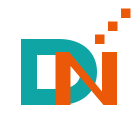

01 · COVER
A safer first automation
An original seven-step explainer
01 / 07

DIGITALNAWA · WORKING TEMPLATES
Original example content · all text remains editable.
الذكاء الاصطناعي والأتمتة
ما المدخل؟ ما النتيجة؟ وأين يراجعها الإنسان؟
AI · AUTOMATION
Define the trigger, review the output, keep a human checkpoint.
DEVELOPMENT · QUICK GUIDE
const result = records
.filter(isReady)
.map(toSummary);
review(result);Neutral pseudorealistic sample: a visible filter → transform → review sequence.
اشرح كل خطوة بجملة قصيرة، ثم اعرض مثالاً صغيراً قابلاً للمراجعة.
افصل المعرّف التقني toSummary() عن اتجاه النص العربي باستخدام عنصر عزل.
BUILD LOG · PROJECT UPDATE
What changed: one workflow now takes fewer repeated steps. Next: gather feedback and refine.
تحديث مشروع
ما الذي تغيّر؟ خطوة متكررة أصبحت أبسط. الخطوة التالية: الاستماع للملاحظات.
Input → transform → review
A practical workflow in 5 minutes
Understand the pattern